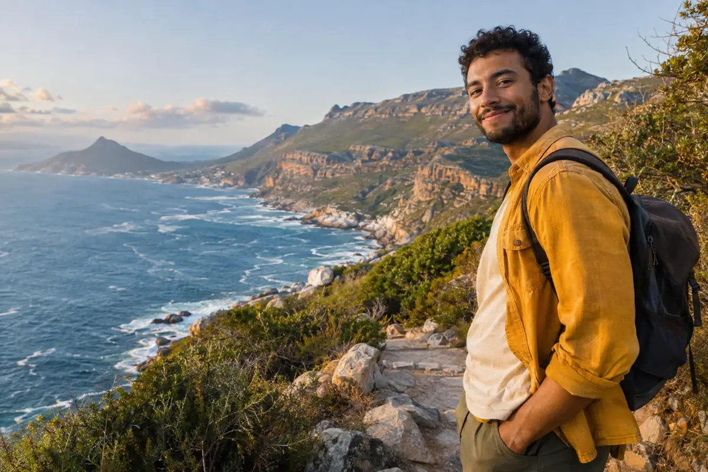

Useful over urgent.
We favour considered writing over pressure to keep scrolling. Reading time, adjustable text and saved stories let you set the pace.
THE PERSON BEHIND THE BACKPACK
A camera, a well-used backpack and a soft spot for the coast. Welcome to my little corner of the world.

I’m Kai, the fictional traveller behind MARGIN. My kind of adventure might be a mountain campsite, a first surf lesson or a road I have passed a hundred times without taking. These stories follow one curious person through all of it.
Kai, his adventures and these first-person stories are fictional demo content created by Alienway Production. The images are AI-generated scenes of the same character, not photographs documenting real trips.
Explore the journal ↗OUR EDITORIAL PROMISE
We favour considered writing over pressure to keep scrolling. Reading time, adjustable text and saved stories let you set the pace.
Authors and publication dates accompany every story. Commercial content is clearly labelled. Our demo contains no paid endorsements.
Saved stories, reader preferences and studio edits stay in this browser. Signup forms send nothing. There are no tracking pixels or real payments. External fonts are requested from Google Fonts. The adventure images are hosted with this website.
The studio models a publishing workflow using browser storage. Owner and editor roles demonstrate different controls; they are not secure accounts. Publishing changes this browser’s demo, not the shared public website. Export your work before clearing browser data.
Try the creator studio ↗